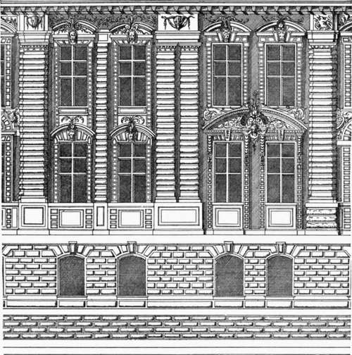
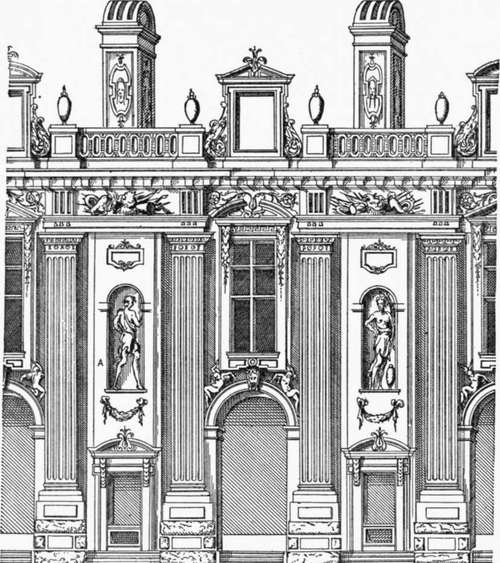

Lescot And De L'Orme. Part 5
Description
This section is from the book "Character Of Renaissance Architecture", by Charles Herbert Moore. Also available from Amazon: Character of Renaissance Architecture.
Lescot And De L'Orme. Part 5
It is not worth while to follow this phase of the French Renaissance art much further, but Du Cerceau gives one other design that is worthy of a moment's attention for its freakish irrationality and, I will not hesitate to say, ugliness, the project for the chateau of Charleval, begun for Charles IX, but not far advanced in construction at the time of his death, and never completed. The exterior fagade of the bassc-couvt is divided into a long series of bays (Fig. 125) by colossal rusticated pilasters of two orders, embracing the two stories into which the elevation, above the basement, is divided. Each pilaster is crowned with a section of an architrave and frieze, in the form of a ressaut of two orders, which interpenetrates the bed mouldings of the continuous cornice. Since the architrave and frieze are not carried along the intervening walls, the pilasters have no real entablature to support even in appearance. Another unmeaning freak of design in this fagade is the kind of variation of the details of the several bays which it exhibits. The rectangular windows are in one bay surmounted with round archivolts, in the next with curved pediments, in another with angular pedimerits above and curved ones below, in another with curved pediments above and round archivolts below, in still another with curved pediments above and a single one embracing both windows below; and so on with continued change with no purpose but that of mere change.1 Viollet le Due2 commends the architect of this fagade for seeking what he calls a grand disposition without abandoning the logical principles of his predecessors. But the great French master appears to me to err in his reasoning here, as frequently elsewhere in his discourse on the architecture of the Renaissance. The great order of Doric pilasters used in this fagade fills, he says, exactly the function of buttresses, and he then proceeds to defend the whole scheme by saying that, " Taking the order as a buttress it is possible, without violence to reason, to cut it by a floor " {i.e. to divide the space between the pilasters into two stories). But there is no sense in taking the order as a buttressing system, for there is nothing in the structure to require buttressing ; and if there were, the pilasters of an order, even though doubled, as in this case, would not form an effective buttress system. It is in nothing but the general arrangement of the main lines that such a composition can be said to bear any resemblance to an organic mediaeval system in which buttresses have a function, and are shaped so as to express it.
1 Op. cit., bk. 8, chap. 9. The pages here are not numbered.
Fig. 125. — Facade of Charleval, Du Cerceau.
The interior fagade of the same building (Fig. 126) presents a different scheme. The great order here has fluted pilasters, and the division of the building into two stories is not expressed on the outside. Viollet le Due remarks on this fagade as follows: " The architect wished here not only to accent the great order more clearly, but also to hide entirely the floor of the upper story;3 and in adopting this scheme, contrary to the logical principles of the architects of the Middle Ages, he has carried it out with remarkable skill. The line of the floor, naturally placed at the level A, is cut by arched niches, so that the eye does not suspect its existence, and is forced to embrace the whole front as if it were one stage." And he adds: " C'etait la l'ceuvre d'un artiste consomme." 1 Thus in one case the architect is lauded for employing the order like a buttress system to justify its embracing two stories, while in the other he is praised for giving a deceptive appearance of only one story; so that this part of the design may, as the writer says in another place, be in better scale with the order. But the distinguished author betrays embarrassment in dealing further with these architectural incongruities of Renaissance design, and after remarking that the architects of this time have resorted to various devices for overcoming the difficulties arising from the lack of harmony between design and construction (" entre la mode d'architecture et les convenances"), which, he says, have occasioned them much torment, he exclaims (p. 376): " Voila cependant ou conduit l'oubli des principes vrais." It is indeed far into devious paths that the architect is led by departure from the true principles of design.
Fig. 126. — Interior facade of Charleval, Du Cerceau.
1 It need hardly be said that such variety is very different from that which results from an active inventive spirit, as where in Gothic art some new constructive idea gives rise to change, or where in sculptured ornamentation a teeming fancy finds expression in varied forms.
2 Entretiens, vol. i, p. 374.
3 But why should an architect wish to do any such thing? The fact that he did so shows again the factitious and unreasonable character of this Renaissance design.
1 Op. cit., p. 375.
A few remarks on the church architecture of the French Renaissance may be added here. It was natural that in church architecture the mediaeval structural forms should largely survive. The French people could not adopt those semi-classic basilican forms of building that were natural to Italy. Thus, while now professing to despise their own noble Gothic art, they still retained through the sixteenth century the later Gothic structural system with no essential modification. This is well illustrated in the church of St. Eustache in Paris, which was begun as late as 1532. It is a very large cruciform Gothic structure, with double aisles and a range of side chapels, overlaid with Renaissance details. Pilasters and entablatures, variously distorted in order to fit them to the Gothic proportions and functions, take the place of vaulting shafts and string courses in the interior of the nave, while on the outside similar members are used with less distortion because of a different division of the stories giving proportions more nearly agreeing with those of classic art. The chapels opening out of the outer aisles have only half the height of these aisles, and thus the exterior has two stories where there is but one inside. An entablature crowns each of these stories, and the upper one has a pseudo-Doric character. The buttresses above the chapels have two superimposed orders of pilasters, and are crowned with urns on pedestals. Thus was a frankly Gothic structure made agreeable to the French taste of the sixteenth century by a barbarous misapplication of mixed and distorted classic details.
The persistence of Gothic structural forms is shown further in the church of St. Etienne du Mont, begun in 1517. In the parts belonging to the original construction almost no classic details occur. It is Flamboyant Gothic of a peculiar type in which vaulting of almost true Gothic form is sustained by plain cylindrical columns of unusual height. The church has no triforium, but the columns are connected by arches at the usual triforium level, and these arches carry a balustraded passageway. The archivolts of this arcade have classic profiles and keystones, and the balustrade is of neo-classic form. In the west front, begun in 1620, neo-classic features are adjusted to Gothic outlines, and the central portal, in the form of a Roman triumphal arch, is furnished with columns modelled after those of De rOrme which he claimed as his own invention.
The church of SS. Gervais and Protais at Gisors has a Flamboyant west front in parts of which Renaissance features have been inserted in different degrees of compromise with Gothic forms and adjustments. The north tower below the cornice has no such features, but the south tower has been completely masked by a late Renaissance covering in three stories of pseudo-classic orders of which the uppermost is incomplete. The main portal is flanked by pilasters, and has splayed jambs and a splayed archivolt, with an entablature at the impost. A segmental arch over this supports a ledge on which is set a tabernacle of three arches, faced by a Corinthian order having no continuous entablature but only entablature blocks, and an attic over the central arch crowned with a curved pediment. It is unnecessary to analyze this west front further; it presents one of the most confused jumbles of incongruous elements anywhere to be met with.
A different manifestation of Renaissance caprice is found in the florid exterior of the apse of St. Pierre of Caen, which is made up of details of a sixteenth-century Lombard character applied to a Flamboyant structural scheme: The round arch and the complete circle take here the place of the pointed forms, and pilasters against the angles have short Flamboyant buttresses set against them, the faces of these buttresses being treated like Lombard Renaissance pilasters.
One of the most remarkable designs to be found in the Renaissance church architecture of France is that of the portal of the north transept of St. Maclou of Pontoise. It belongs to the early period, and is much like what we have seen in the portal of the chateau of Azay le Rideau (p. 182). The opening is round-arched and has a narrow splay. It is flanked by pilasters and crowned with an entablature surmounted with a fanciful pediment of broken outline, ornamented with a tablet and death's-head, and flanked by finials of nondescript design. This portal is again flanked by colossal pilasters, rising from pedestals almost as high as the arch impost, and reaching to the cornice at the level of the aisle roof. Against each of these pilasters a short, fluted column, with a capital of pseudo-composite form, rises from a pedestal engaged with the pilaster pedestal. The portion of the pilaster that rises above this column is treated like a niche, with a base resting on the capital of the column, and with an ornamental canopy above that rises through the capital of the pilaster.
It is unnecessary to extend further these tiresome descriptions. The foregoing examples are enough to show how irrational was the use made of neo-classic details in the church architecture of the French Renaissance, and how they were engrafted on a Gothic structural scheme. It was in this manner that the French architects of the time sought to " reform the Gothic and bastard styles."
Continue to:
- prev: Lescot And De L'Orme. Part 4
- Table of Contents
- next: Chapter XIII. Architecture Of The Renaissance In England. I. Elizabethan Art